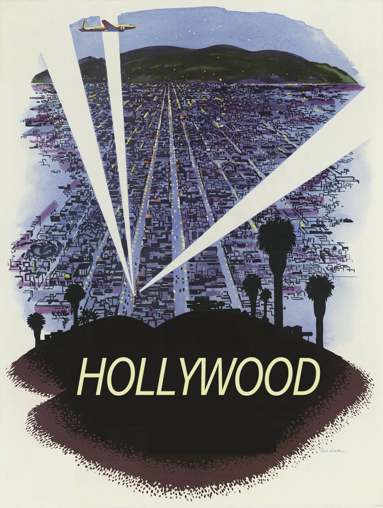
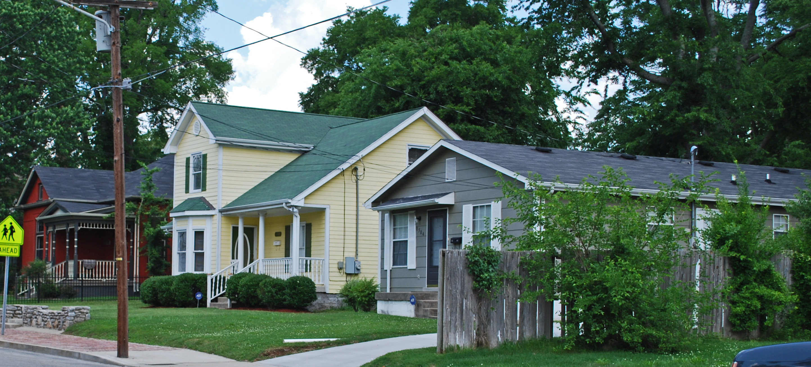

Cyclistic Bike-Share:
How Does a Bike-Share Navigate Speedy Success?
An analytic presentation of how to convert casual riders to member riders based on available data from last year (2022).
The data were analyzed using various tools from Excel such as Power Query and Power Pivot
Movie EDA and
Correlation Data Analysis

Analyze with Python pandas and matplotlib visualizations about what makes movies achieve high grossing status.
Rollercoaster
Exploratory data analysis (EDA)

Explore the data about rollercoasters in the US, from average speed, to the correlation between height and velocity, and other interesting stuff to be explored using python panda with Jupyter notebook to process datasets.

Exploratory Data Visualization in Tableau using SQL to explore and manipulate the data about the state of housing in Tennessee from year 2013 to 2019